Arduino is een open-source electronics platform om prototypes te bouwen. Arduino werkt met soft- en hardware.
In deze opdracht moet het groene lampje twee keer zo snel knipperen als het gele lampje. Dit heb ik gedaan door een delay toe te voegen.
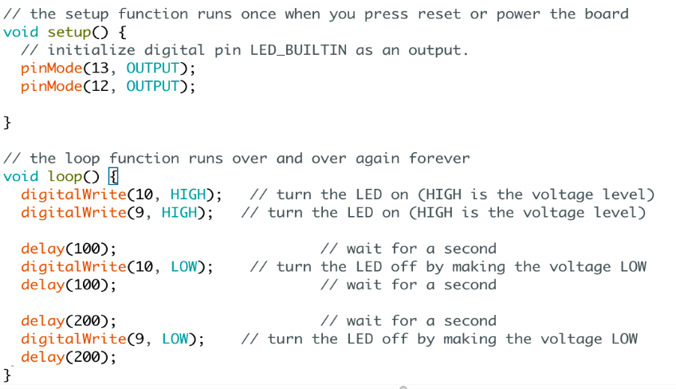Het gele lampje gaat langzaam uit terwijl het groene lampje langzaam aangaat en vice versa. Dit komt doordat het gele lampje begint met een 255-brightness en loop aangeeft dat de brightness op dat moment omhoog moet gaan.
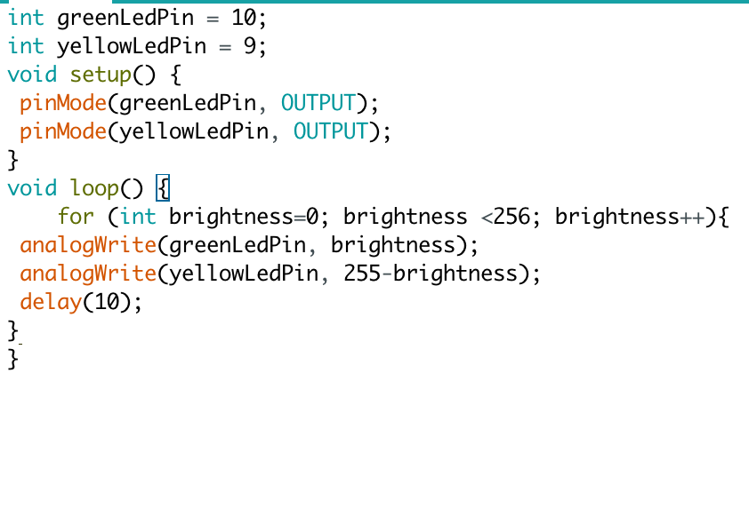Dit is dezelfde opdracht als 4C, alleen heb ik hier een potmeter toegevoegd. Deze zorgt ervoor dat de lampjes om en om aan en uit 'faden'.
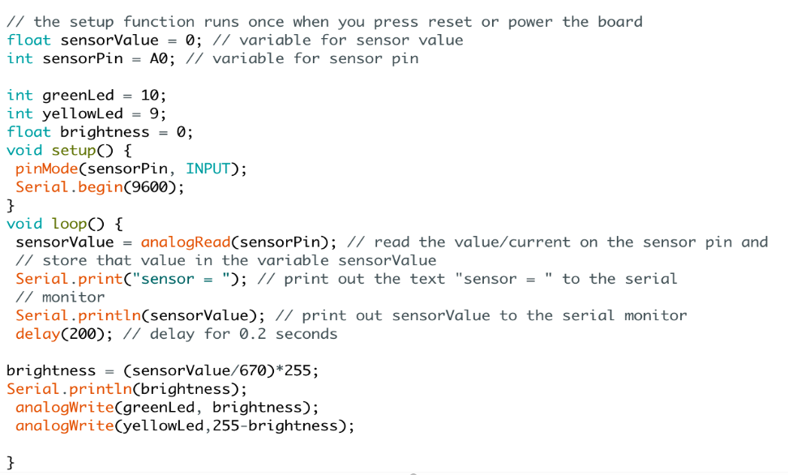In deze opdracht heb ik gewerkt met een LDR (Light Dependent Resistor). Dit is een resistor die licht opvangt. Als het donker is gaan de lampjes aan en als het licht is gaan ze uit.
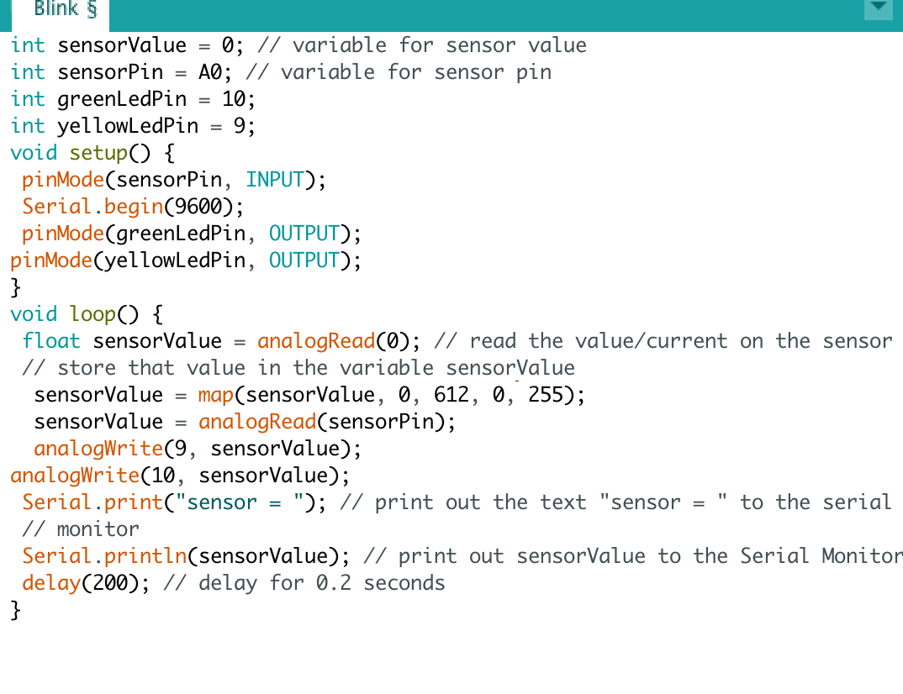In deze opdracht heb ik gewerkt met Arduino in combinatie met Processing. De input van de LDR zorgt voor de output in Processing. Dit heb ik gedaan door in Processing de 'float' de waarde 'sensorReading' te geven. Het vierkantje gaat naar de hoek van het scherm als de LDR geen licht krijgt.
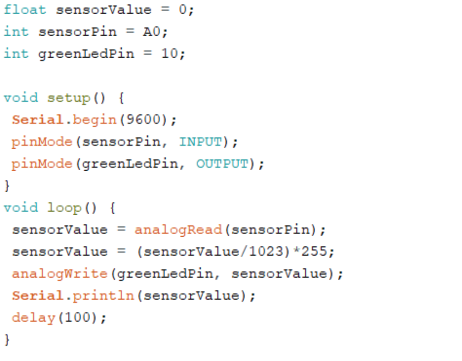 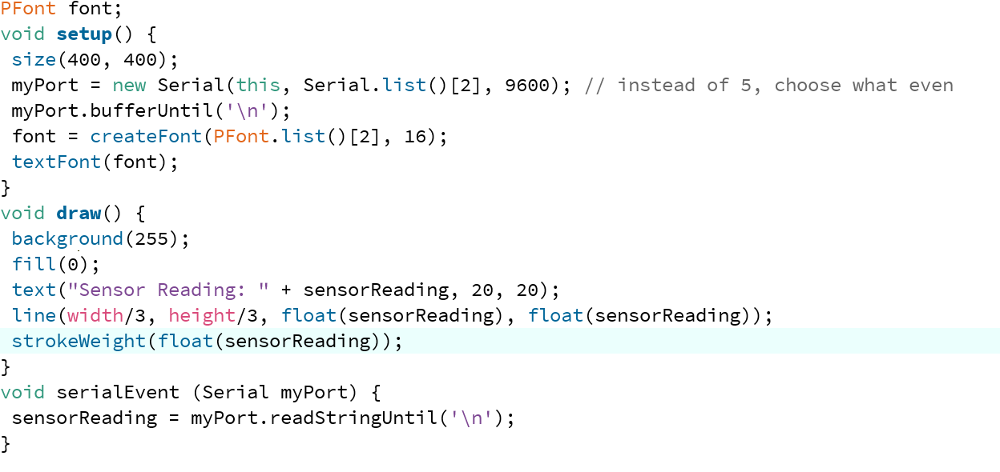In deze opdracht heb ik gewerkt met buttons. Deze buttons zijn de input voor de LEDlampjes. Door de if statement gaat het lampje aan als één van de buttons wordt ingedrukt, maar niet beiden.
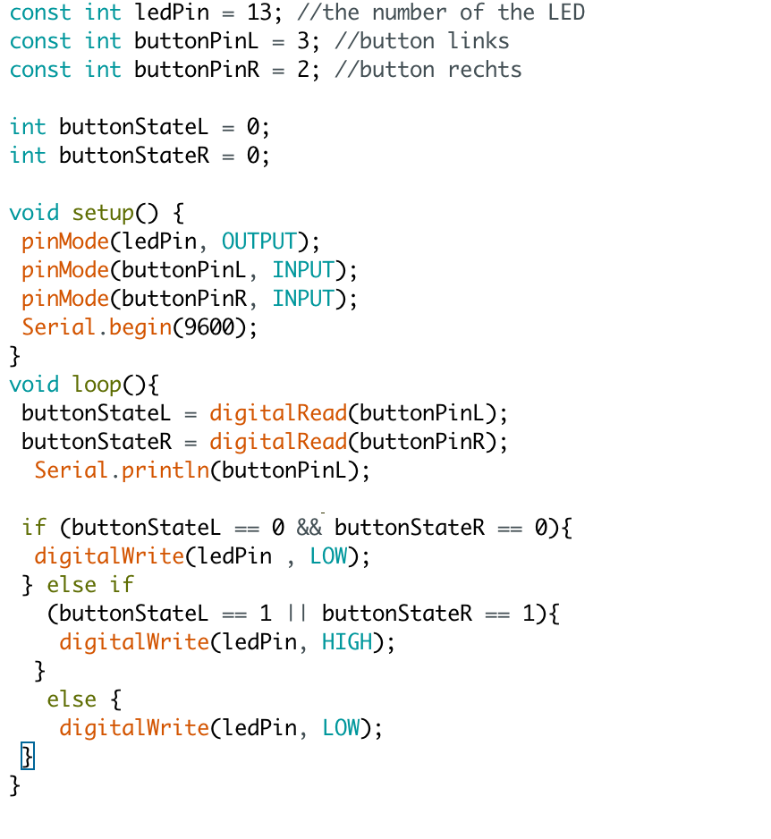In deze opdracht heb ik een Servomotor toegevoegd. Deze heb ik met pos een 'positie' gegeven, waardoor die beweegt tot een bepaalde graad.
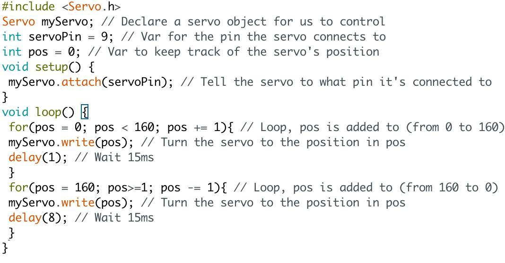In deze opdracht is de Servomoto gecombineert met de buttons. Als de ene button ingedrukt wordt gaat de servomotor naar links en met de andere buttons gaat de servomoto daar rechts. Dit komt doordat met de linker button de positie verhoogt wordt en met de rechter verlaagt (pos++ en pos--).
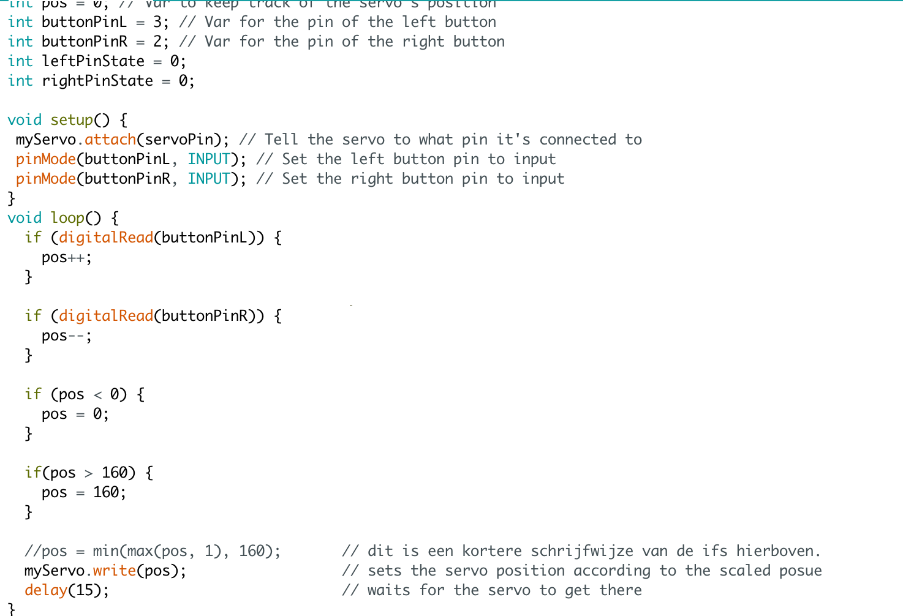In deze opdracht heb ik gewerkt met een speaker. In de arduino heb ik een code geschreven om aan te geven welke noten afgespeeld moeten worden. De bedoeling was het Coca-Cola liedje, maar doordat ik slechts bepaalde noten had, lijkt het er niet echt op.
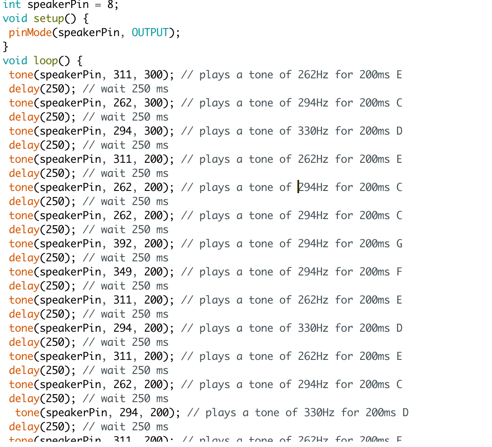 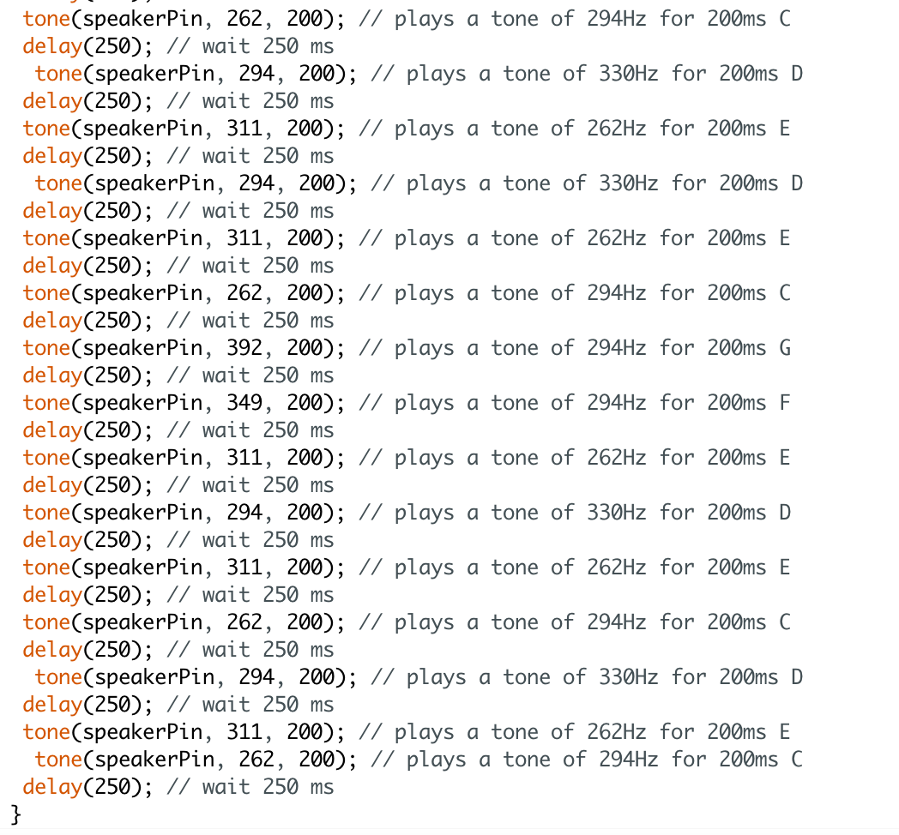De bedoeling vand deze opdracht was om de accelerometer en speaker te combineren. De accelerometer functioneer als waterpas en als deze recht staat maakt de speaker geluid. Om deze opdracht te kunnen uitvoeren moet je eerst de accelerometer kalibreren, zodat je weet welke waardes je nodig hebt in de vervolg code. Helaas kan mijn laptop de kalibratie niet aan. Het is mij één keer gelukt om de waardes te bepalen, maar aangezien ik toen weg moest (lokaal verlaten) klopten deze waardes niet meer. Toen ik het thuis nogmaals probeerde, liep de Serial Monitor constant vast en had ik geen waardes. Ook andere studiegenoten hadden hier last van, dus heb ik het ook niet op een andere laptop kunnen maken.